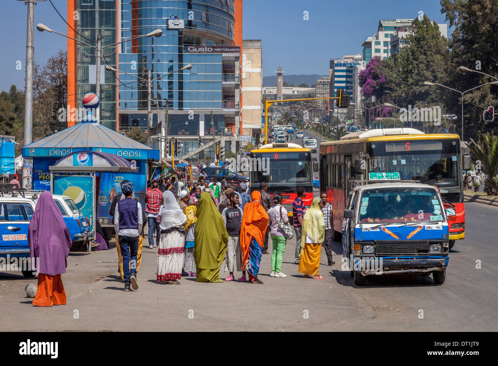

City Transport
As it is known, the population is more in urban areas than in rural areas, and transportation is required to move from one place to another because it is not very suitable for traveling by horse or other transport animals like in rural areas. Urban areas are also so densely populated, and infrastructure is geographically closer. Thus, city transport is required.